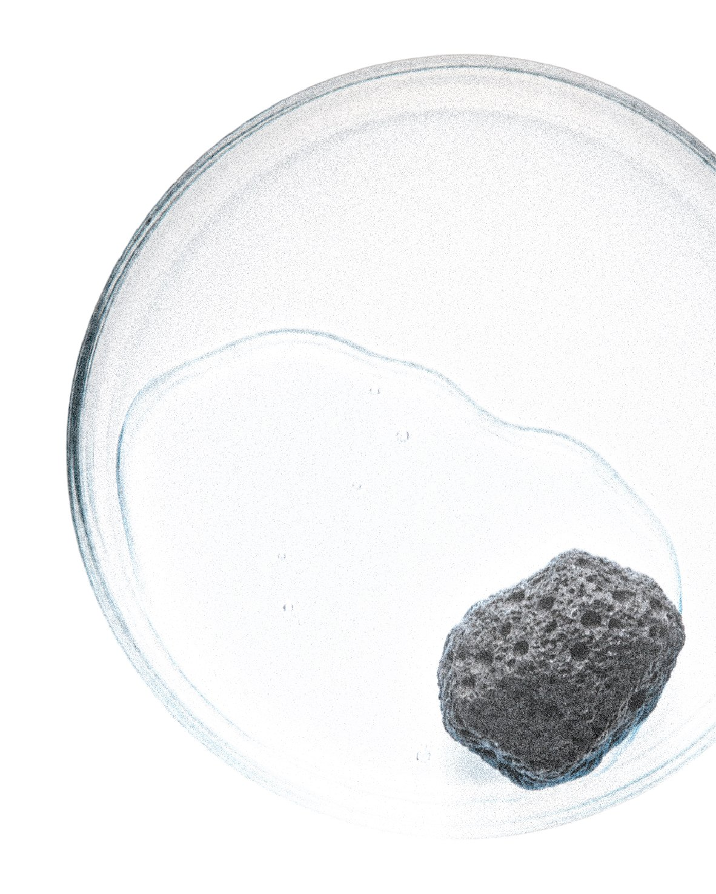
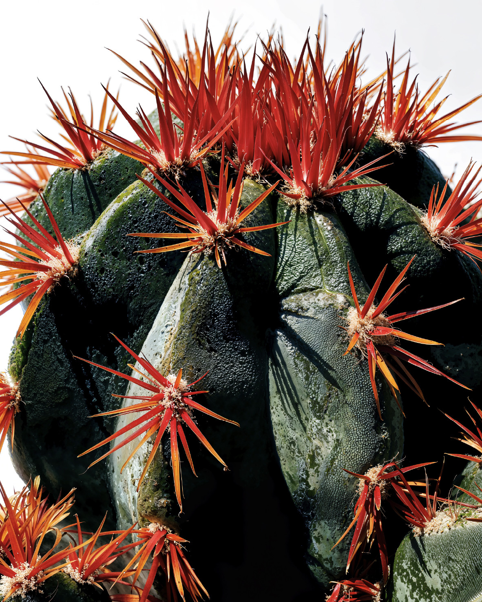
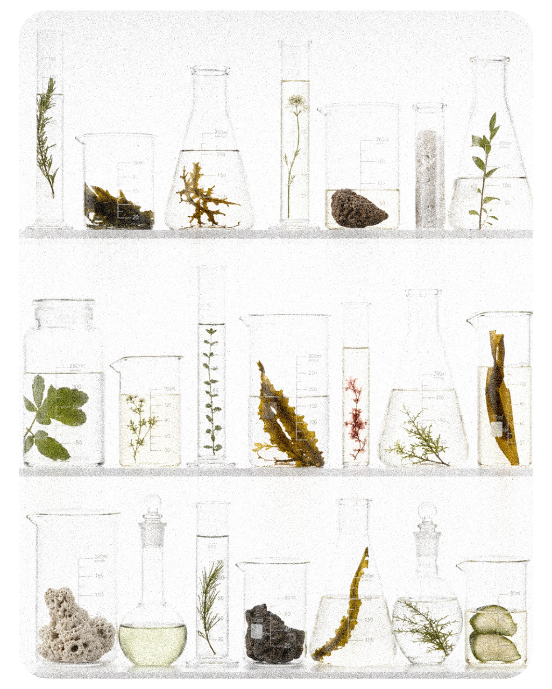
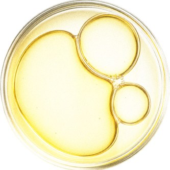
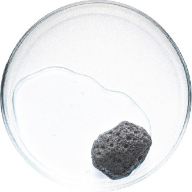
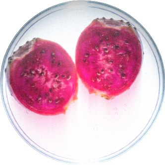
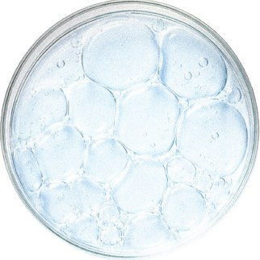
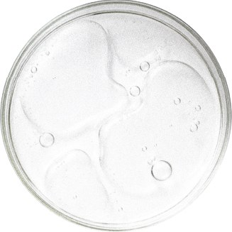
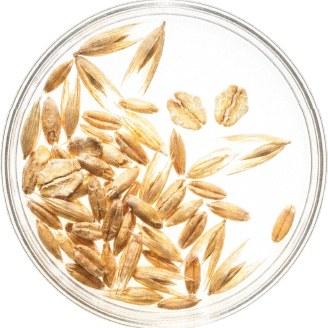

제주 용암해수 미네랄
현무암층을 통과하며 걸러진 물. 미네랄 균형이 일정해 처방의 기준값을 잡기 좋습니다.
라바섬의 제품은 성분표가 아니라 설계도에서 시작합니다. 농도가 유지되는 조건, 피부가 견디는 조건을 먼저 맞춥니다.
미백 Brightening
순수 비타민C를 무수 처방으로 안정화한 고농도 앰플.
13.5% · 135,000ppm
보러가기항산화 Antioxidant
자극 요인을 덜어내는 데 초점을 맞춘 진정 라인.
50%
보러가기탄력 Firming
밀도와 탄력의 조건을 다루는 집중 케어.
1,000ppm
보러가기광채 Radiance
맑기의 기준을 올리는 고함량 설계.
20,000ppm
보러가기각질관리 Exfoliation
수분 보유력을 유지하며 결을 정리합니다.
90%
보러가기일상 보호 Daily Shield
매일 쓰기 위한 가벼운 마무리.
SPF50+ / PA++++
보러가기Scroll to open
순수 비타민C는 물과 만나는 순간부터 무너집니다. 라바섬은 물을 빼는 쪽을 택했습니다.
순수 비타민C Pure Ascorbic Acid
함량 Concentration
흡수 조건 Absorption
레이어 구조 Dual Layer
수분을 차단하는 무수 베이스가 순수 비타민C를 감쌉니다. 개봉 전까지 산화가 시작되지 않도록 설계했습니다.
피부에 닿는 순간 유효 성분이 풀리도록 조건을 맞췄습니다. 농도가 아니라 도달이 목적입니다.
Jeju Origin, Built for Stability
제주를 이미지로 쓰지 않습니다. 처방이 안정적으로 작동하는 조건을 제주의 물과 식물에서 찾았습니다.

현무암층을 통과하며 걸러진 물. 미네랄 균형이 일정해 처방의 기준값을 잡기 좋습니다.

건조와 자외선을 견디며 자란 식물. 견디는 힘을 처방 쪽으로 옮겼습니다.

원료의 채취와 검증을 지역 연구 기관과 함께 진행합니다.
강함이 아니라 균형입니다. 고농도를 견디게 만드는 것은 농도가 아니라 조건입니다.
Recommended for 고농도 제품에서 자극을 느껴본 분 · 결과는 원하지만 순한 사용감을 포기하고 싶지 않은 분 · 성분의 근거를 확인하고 쓰는 분
Multi-Active Brightening Formula
각각이 따로 작동하지 않도록, 서로의 조건을 방해하지 않는 조합만 남겼습니다.

Ascorbic Acid
13.5%
전환 과정 없이 그대로 작동하는 형태로.

Lava Seawater
미네랄
처방의 기준을 잡는 물.

Opuntia
제주 유래
건조를 견디며 축적한 다당체.

Peptide
복합
탄력의 조건을 보조합니다.

Glutathione
고함량
맑기의 기준을 올리는 항산화 축.

Beta-Glucan
진정
고농도를 견디게 하는 완충.